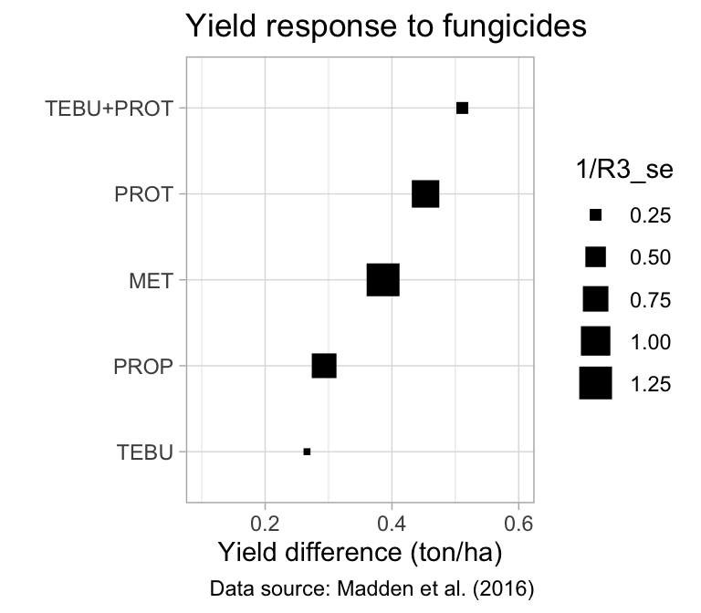
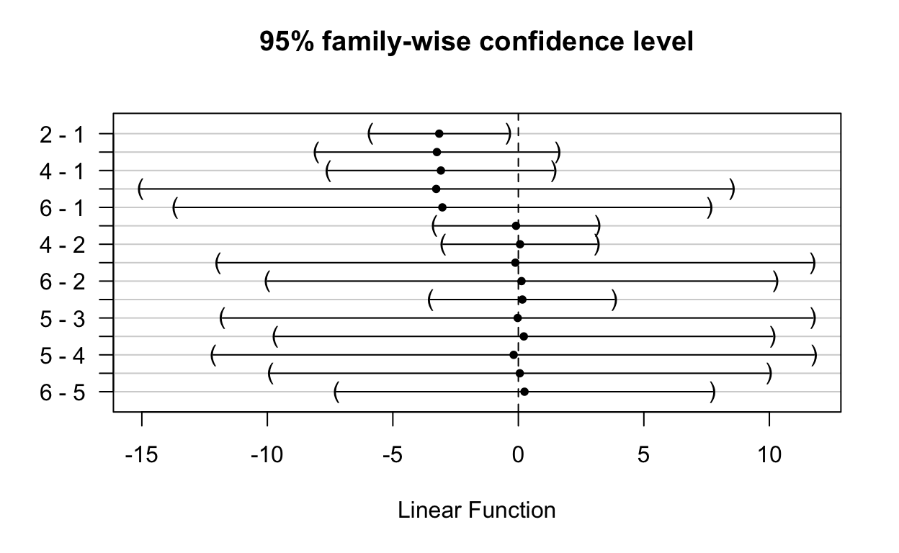

Why and who is this post for?
Meta-analysis (MA) has gained popularity in Plant Pathology. Among the several meta-analytic methods, Network Meta-Analysis (NMA) models, also known as Mixed Treatment Comparison (MTC), has been thoroughly presented to plant pathologists in a recent review paper published in Phytopathology.[1]
Results of a recent survey (Del Ponte, unpublished) showed that more than 50 meta-analysis articles have been published using plant disease-related data, mainly to test treatment effects on disease severity and yield, but also their relationship, among other effects of interest. Although this is a VERY small number of studies compared with other fields (medicine and psychology), a trend towards increasing its use in our field is evident.
Specifically, multiple treatment comparison (e.g. fungicides and biocontrol agents) is usually of interest and these treatments are usually compared with a common treatment, the untreated check, with their effects (relative control) thus being correlated. Hence, this post is for those interest in learning how to fit network meta-analysis models, in particular the frequentist and arm-based approach (as opposed to contrast-based) using open source tools, as alternative to SAS and other commercial software.
Here, I reproduce the analysis shown in a paper where the authors made available all the data (wheat yield response to fungicides), as well as SAS codes,[1] using an MA-specific package of R (metafor). Here I fitted the same model, the arm-based or unconditional, similar to the original paper. In that case, his approach the effect sizes are directly the treatment means and not the difference or ratio as traditionally performed in meta-analysis).
I will reproduce some, not all, of the arm-based models presented in the original paper using a meta-analysis-specific package called metafor. I will explain most of the important details about how to prepare the data, visualize the responses, fit the models and compare results with the original paper. Anyone should be able to reproduce the analysis below by copying and pasting into R. To facilitate instant access and reproducibility, I created an RStudio project in the cloud where anyone can run this code and get the same results. Click here to get access to the R project in the cloud
Data preparation
The data were obtained from the supplemental FileS1, a SAS file that contains the documented code and the data. Here, the data were organized in one MS Excel file following the same original structure and content, excepting that missing data was represented by an empty cell. Let’s load some packages for data importing and wrangling.
Now we are ready to import the data and convert both yield and variance to metric unit as performed in the paper. Note: we do not need to create the weight variable as in the SAS code because this is handled in the meta-analysis specific R packages.
wheat0 <- read_excel("wheat.xlsx")
wheat <- wheat0 %>%
mutate(
varyld = (1 / wtyield) * (0.0628^2),
yield = yield * 0.0628
) %>%
na.omit() # here we omit the rows with missing data
Let’s replace the names of the levels of the treatment factor from numbers to the fungicide treatment acronym.
wheat <- wheat %>%
mutate(trt = replace(trt, trt == 10, "CTRL")) %>%
mutate(trt = replace(trt, trt == 2, "TEBU")) %>%
mutate(trt = replace(trt, trt == 3, "PROP")) %>%
mutate(trt = replace(trt, trt == 4, "PROT")) %>%
mutate(trt = replace(trt, trt == 5, "TEBU+PROT")) %>%
mutate(trt = replace(trt, trt == 6, "MET"))
Meta-analytic (arm-based) model
I use here the metafor package, a free and open-source add-on for conducting meta-analyses with the statistical software environment R. I followed the example for fitting the arm-based network MA as shown in this presentation and this documentation by the author of the package.
In the original NMA paper, the authors compared three different variance-covariance matrix for a random-effects model: compound symmetry (CS), heterogeneous CS (HCS) and unstructured (UN). These can be informed directly in the rma.mv function. Ok, let’s load metafor package now.
Now we can fit the first model, model R1 in the paper, with compound symmetry (CS) structure for the variance-covariance matrix.[1] This is used because all treatments within a study share the same random effect, all treatments are correlated, with a covariance for pairs of treatments given by the between-study variance.[1]
We use the rma.mv function that allows fitting mixed effects model for multivariate and multi-treatment situations. The first two arguments are the effect of interest, which is yield (means of the treatment of interest across replicates within the same trial) and the sampling variance varyld (e.g. the residual variance obtained from the fit of an anova like model). Our moderators is the factor of interest, in our case treatment trt. The method is the maximum likelihood. The random component will be treatment and trial, meaning a random intercept for treatments within trials, which are also random. The struct is CS and the data is wheat.
We call the summary results of the model. Let’s jump straight to model results where we can check the estimates for each treatment which are the differences to the intercept, defined as the untreated check. We can see that MET (0.436 ton) and PROP (0.20 ton) provided the highest and lowest numerical yield difference relative to the untreated (intercept). We should also look at the 95% confidence intervals.
summary(net_arm_CS)
Multivariate Meta-Analysis Model (k = 558; method: ML)
logLik Deviance AIC BIC AICc
-283.5052 1710.1250 583.0105 617.6054 583.2728
Variance Components:
outer factor: factor(trial) (nlvls = 136)
inner factor: trt (nlvls = 6)
estim sqrt fixed
tau^2 1.5516 1.2456 no
rho 0.9841 no
Test for Residual Heterogeneity:
QE(df = 552) = 55024.7841, p-val < .0001
Test of Moderators (coefficients 2:6):
QM(df = 5) = 319.9986, p-val < .0001
Model Results:
estimate se zval pval ci.lb ci.ub
intrcpt 3.5335 0.1076 32.8500 <.0001 3.3227 3.7443 ***
trtMET 0.4360 0.0309 14.1295 <.0001 0.3755 0.4965 ***
trtPROP 0.1994 0.0361 5.5206 <.0001 0.1286 0.2702 ***
trtPROT 0.4286 0.0365 11.7560 <.0001 0.3572 0.5001 ***
trtTEBU 0.2744 0.0258 10.6558 <.0001 0.2239 0.3249 ***
trtTEBU+PROT 0.4326 0.0306 14.1523 <.0001 0.3727 0.4925 ***
---
Signif. codes: 0 '***' 0.001 '**' 0.01 '*' 0.05 '.' 0.1 ' ' 1Heterogeneous CS
Alternatively, between-study variance can be considered unequal when there is an overall random study effect. In this model, there is a constant between-study correlation for all pairs of treatments with unequal between-study total variances, and this matrix is called heterogeneous compound symmetry (HCS). This the R2 model in.[1]
Compare the results with the previous model.
summary(net_arm_HCS)
Multivariate Meta-Analysis Model (k = 558; method: ML)
logLik Deviance AIC BIC AICc
-278.3457 1699.8060 582.6915 638.9082 583.3606
Variance Components:
outer factor: factor(trial) (nlvls = 136)
inner factor: trt (nlvls = 6)
estim sqrt k.lvl fixed level
tau^2.1 1.6636 1.2898 136 no CTRL
tau^2.2 1.4271 1.1946 86 no MET
tau^2.3 1.5232 1.2342 57 no PROP
tau^2.4 1.5315 1.2375 56 no PROT
tau^2.5 1.5312 1.2374 136 no TEBU
tau^2.6 1.5056 1.2270 87 no TEBU+PROT
rho 0.9848 no
Test for Residual Heterogeneity:
QE(df = 552) = 55024.7841, p-val < .0001
Test of Moderators (coefficients 2:6):
QM(df = 5) = 301.4403, p-val < .0001
Model Results:
estimate se zval pval ci.lb ci.ub
intrcpt 3.5379 0.1113 31.7790 <.0001 3.3197 3.7561 ***
trtMET 0.4334 0.0312 13.8703 <.0001 0.3722 0.4947 ***
trtPROP 0.1946 0.0360 5.4039 <.0001 0.1240 0.2651 ***
trtPROT 0.4263 0.0364 11.7284 <.0001 0.3551 0.4976 ***
trtTEBU 0.2687 0.0260 10.3307 <.0001 0.2177 0.3196 ***
trtTEBU+PROT 0.4290 0.0307 13.9841 <.0001 0.3688 0.4891 ***
---
Signif. codes: 0 '***' 0.001 '**' 0.01 '*' 0.05 '.' 0.1 ' ' 1Unstructured matrix
Finally, we fit now the model with an unstructured (UN) variance-covariance matrix. Here, we allow the matrix to be completely unstructured, with different variance for each treatment or different covariance (correlation) for each pair of treatments. Note: I needed to use an optimizer (see the control argument) for convergence.
We can then check results:
summary(net_arm_UN)
Multivariate Meta-Analysis Model (k = 558; method: ML)
logLik Deviance AIC BIC AICc
-242.0879 1627.2903 538.1758 654.9335 541.0286
Variance Components:
outer factor: factor(trial) (nlvls = 136)
inner factor: trt (nlvls = 6)
estim sqrt k.lvl fixed level
tau^2.1 1.6620 1.2892 136 no CTRL
tau^2.2 1.4346 1.1977 86 no MET
tau^2.3 1.5284 1.2363 57 no PROP
tau^2.4 1.5182 1.2321 56 no PROT
tau^2.5 1.5224 1.2339 136 no TEBU
tau^2.6 1.5221 1.2338 87 no TEBU+PROT
rho.CTRL rho.MET rho.PROP rho.PROT rho.TEBU rho.TEBU+
CTRL 1 0.9764 0.9890 0.9730 0.9862 0.9616
MET 0.9764 1 0.9896 0.9995 0.9887 0.9948
PROP 0.9890 0.9896 1 0.9860 0.9909 0.9786
PROT 0.9730 0.9995 0.9860 1 0.9874 0.9966
TEBU 0.9862 0.9887 0.9909 0.9874 1 0.9880
TEBU+PROT 0.9616 0.9948 0.9786 0.9966 0.9880 1
CTRL MET PROP PROT TEBU TEBU+
CTRL - no no no no no
MET 86 - no no no no
PROP 57 42 - no no no
PROT 56 41 24 - no no
TEBU 136 86 57 56 - no
TEBU+PROT 87 74 39 47 87 -
Test for Residual Heterogeneity:
QE(df = 552) = 55024.7841, p-val < .0001
Test of Moderators (coefficients 2:6):
QM(df = 5) = 200.3051, p-val < .0001
Model Results:
estimate se zval pval ci.lb ci.ub
intrcpt 3.5353 0.1113 31.7666 <.0001 3.3171 3.7534 ***
trtMET 0.4502 0.0332 13.5554 <.0001 0.3851 0.5153 ***
trtPROP 0.1991 0.0322 6.1804 <.0001 0.1360 0.2623 ***
trtPROT 0.4192 0.0373 11.2287 <.0001 0.3461 0.4924 ***
trtTEBU 0.2725 0.0251 10.8399 <.0001 0.2232 0.3218 ***
trtTEBU+PROT 0.4445 0.0385 11.5454 <.0001 0.3690 0.5199 ***
---
Signif. codes: 0 '***' 0.001 '**' 0.01 '*' 0.05 '.' 0.1 ' ' 1Model comparison
To facilitate comparison, we can extract the mean estimate and the respective standard error from each of the models namely R1 (CS), R2(HCS) and R3(UN) as in the original paper.
And now we prepare a table for displaying the statistics and can compare with the original paper. We can notice that the results are very similar, although not identical.
table1 <-
data.frame(R1_mean, R1_se, R2_mean, R2_se, R3_mean, R3_se)
colnames(table1) <- c("R1_mean", "R1_se", "R2_mean", "R2_se", "R3_mean", "R3_se")
table1$Treat <- c("CTRL", "MET", "PROP", "PROT", "TEBU", "TEBU+PROT")
knitr::kable(table1)
| R1_mean | R1_se | R2_mean | R2_se | R3_mean | R3_se | Treat |
|---|---|---|---|---|---|---|
| 3.534 | 0.108 | 3.538 | 0.111 | 3.535 | 0.111 | CTRL |
| 0.436 | 0.031 | 0.433 | 0.031 | 0.450 | 0.033 | MET |
| 0.199 | 0.036 | 0.195 | 0.036 | 0.199 | 0.032 | PROP |
| 0.429 | 0.036 | 0.426 | 0.036 | 0.419 | 0.037 | PROT |
| 0.274 | 0.026 | 0.269 | 0.026 | 0.272 | 0.025 | TEBU |
| 0.433 | 0.031 | 0.429 | 0.031 | 0.444 | 0.038 | TEBU+PROT |

As in the original paper, we will compare all three models based on the LRT test (using the anova function). The full model uses the UN variance-covariance matrix. Agreeing with the original study, the UN provided a better fit to the data based on the lowest AIC.
anova(net_arm_HCS, net_arm_CS)
df AIC BIC AICc logLik LRT pval
Full 13 582.6915 638.9082 583.3606 -278.3457
Reduced 8 583.0105 617.6054 583.2728 -283.5052 10.3190 0.0667
QE
Full 55024.7841
Reduced 55024.7841 anova(net_arm_CS, net_arm_UN)
df AIC BIC AICc logLik LRT pval
Full 27 538.1758 654.9335 541.0286 -242.0879
Reduced 8 583.0105 617.6054 583.2728 -283.5052 82.8347 <.0001
QE
Full 55024.7841
Reduced 55024.7841 anova(net_arm_HCS, net_arm_UN)
df AIC BIC AICc logLik LRT pval
Full 27 538.1758 654.9335 541.0286 -242.0879
Reduced 13 582.6915 638.9082 583.3606 -278.3457 72.5157 <.0001
QE
Full 55024.7841
Reduced 55024.7841 Forest plot
With the results in hand, a dot and error plot with treatments ordered from highest to lowest yield difference is a nice way to visualize the results - not identical but similar to a traditional forest plots. For such, we make the size of the dots proportional to the inverse of the standard error.
table1 %>%
filter(Treat != "CTRL") %>%
ggplot(aes(reorder(Treat, R3_mean), R3_mean)) +
geom_point(aes(size = 1 / R3_se), shape = 15) +
geom_errorbar(aes(
ymin = R3_mean - R3_se,
ymax = R3_mean + R3_se
), width = 0.01) +
ylim(0.1, 0.6) +
labs(
y = "Yield difference (ton/ha)",
x = "",
title = "Yield response to fungicides",
caption = "Data source: Madden et al. (2016)"
) +
theme_light() +
coord_flip()

Head to head comparison
Using the best model (or any model, in fact) we can perform a head-to-head comparison based on the network model results. We can do it using multcomp package.
library(multcomp)
net_arm_UN_comp <- summary(glht(net_arm_UN, linfct = cbind(contrMat(rep(1, 6), type = "Tukey")), test = adjusted("none")))
net_arm_UN_comp
Simultaneous Tests for General Linear Hypotheses
Fit: rma.mv(yi = yield, V = varyld, mods = ~trt, random = list(~trt |
factor(trial)), struct = "UN", data = wheat, method = "ML",
control = list(optimizer = "nlm"))
Linear Hypotheses:
Estimate Std. Error z value Pr(>|z|)
2 - 1 == 0 -3.08506 0.12678 -24.33 <0.001 ***
3 - 1 == 0 -3.33612 0.12244 -27.25 <0.001 ***
4 - 1 == 0 -3.11604 0.12574 -24.78 <0.001 ***
5 - 1 == 0 -3.26277 0.12119 -26.92 <0.001 ***
6 - 1 == 0 -3.09079 0.12709 -24.32 <0.001 ***
3 - 2 == 0 -0.25106 0.03419 -7.34 <0.001 ***
4 - 2 == 0 -0.03098 0.02712 -1.14 0.84
5 - 2 == 0 -0.17771 0.02761 -6.44 <0.001 ***
6 - 2 == 0 -0.00573 0.02476 -0.23 1.00
4 - 3 == 0 0.22008 0.03881 5.67 <0.001 ***
5 - 3 == 0 0.07334 0.03092 2.37 0.14
6 - 3 == 0 0.24532 0.03830 6.41 <0.001 ***
5 - 4 == 0 -0.14673 0.03185 -4.61 <0.001 ***
6 - 4 == 0 0.02525 0.02788 0.91 0.93
6 - 5 == 0 0.17198 0.02810 6.12 <0.001 ***
---
Signif. codes: 0 '***' 0.001 '**' 0.01 '*' 0.05 '.' 0.1 ' ' 1
(Adjusted p values reported -- single-step method)We plot the results for more easily checking which differences are statistically significant (not embracing zero).
plot(net_arm_UN_comp)

Moderator effects
In the original paper, two models were expanded to include the effect of wheat class (S = Spring wheat and W = Winter wheat) as moderator. Let’s fit the CS model as in the paper and add this moderator factor in interaction with the treatment factor. The rest is the same.
As usual, we look at the model summary and check the estimates for each combination of treatment and wheat class.
summary(net_arm_CS_class)
Multivariate Meta-Analysis Model (k = 558; method: ML)
logLik Deviance AIC BIC AICc
-268.1385 1679.3915 574.2770 656.4398 575.6897
Variance Components:
outer factor: factor(trial) (nlvls = 136)
inner factor: factor(trt) (nlvls = 6)
estim sqrt k.lvl fixed level
tau^2.1 1.4653 1.2105 136 no CTRL
tau^2.2 1.2939 1.1375 86 no MET
tau^2.3 1.3777 1.1738 57 no PROP
tau^2.4 1.3796 1.1746 56 no PROT
tau^2.5 1.3820 1.1756 136 no TEBU
tau^2.6 1.3500 1.1619 87 no TEBU+PROT
rho 0.9834 no
Test for Residual Heterogeneity:
QE(df = 546) = 45668.0682, p-val < .0001
Test of Moderators (coefficients 2:12):
QM(df = 11) = 337.5308, p-val < .0001
Model Results:
estimate se zval pval
intrcpt 3.0217 0.1598 18.9068 <.0001
factor(trt)MET 0.5226 0.0431 12.1350 <.0001
factor(trt)PROP 0.2647 0.0499 5.3060 <.0001
factor(trt)PROT 0.4986 0.0573 8.7051 <.0001
factor(trt)TEBU 0.3353 0.0368 9.1056 <.0001
factor(trt)TEBU+PROT 0.4886 0.0438 11.1556 <.0001
classW 0.9057 0.2114 4.2849 <.0001
factor(trt)MET:classW -0.1686 0.0614 -2.7444 0.0061
factor(trt)PROP:classW -0.1331 0.0714 -1.8648 0.0622
factor(trt)PROT:classW -0.1286 0.0738 -1.7437 0.0812
factor(trt)TEBU:classW -0.1230 0.0512 -2.4017 0.0163
factor(trt)TEBU+PROT:classW -0.1092 0.0606 -1.8020 0.0715
ci.lb ci.ub
intrcpt 2.7085 3.3350 ***
factor(trt)MET 0.4382 0.6070 ***
factor(trt)PROP 0.1669 0.3624 ***
factor(trt)PROT 0.3864 0.6109 ***
factor(trt)TEBU 0.2631 0.4075 ***
factor(trt)TEBU+PROT 0.4028 0.5745 ***
classW 0.4914 1.3200 ***
factor(trt)MET:classW -0.2890 -0.0482 **
factor(trt)PROP:classW -0.2729 0.0068 .
factor(trt)PROT:classW -0.2732 0.0160 .
factor(trt)TEBU:classW -0.2234 -0.0226 *
factor(trt)TEBU+PROT:classW -0.2280 0.0096 .
---
Signif. codes: 0 '***' 0.001 '**' 0.01 '*' 0.05 '.' 0.1 ' ' 1We can check whether the full model with the moderator is a better fit than the reduced (without moderator) model. The P-value of the LRT test suggests that indeed wheat class has a strong effect on treatment effects. This agrees with the results using SAS.
anova(net_arm_CS, net_arm_CS_class)
df AIC BIC AICc logLik LRT pval
Full 19 574.2770 656.4398 575.6897 -268.1385
Reduced 8 583.0105 617.6054 583.2728 -283.5052 30.7335 0.0012
QE
Full 45668.0682
Reduced 55024.7841 Wrapping up
We fitted three network models to the means of wheat yields under the effect of fungicide treatments. These models have different variance-covariance matrix. Results of these three models and, of the one expanded to include the effect of wheat class, are not identical to those obtained in,[1] but they are all very similar.
Useful links and other papers
Research compendia: All the codes are made available and anyone should be able to reproduce it after downloading the research compendium and installing all the required packages (RStudio will tell you when you open the Rmd file!). You may want to check these repositories of code and data from work published in my lab using these methods:,[2],[3] Machado et al. (2017)
Fitting arm-based meta-analysiswith metafor